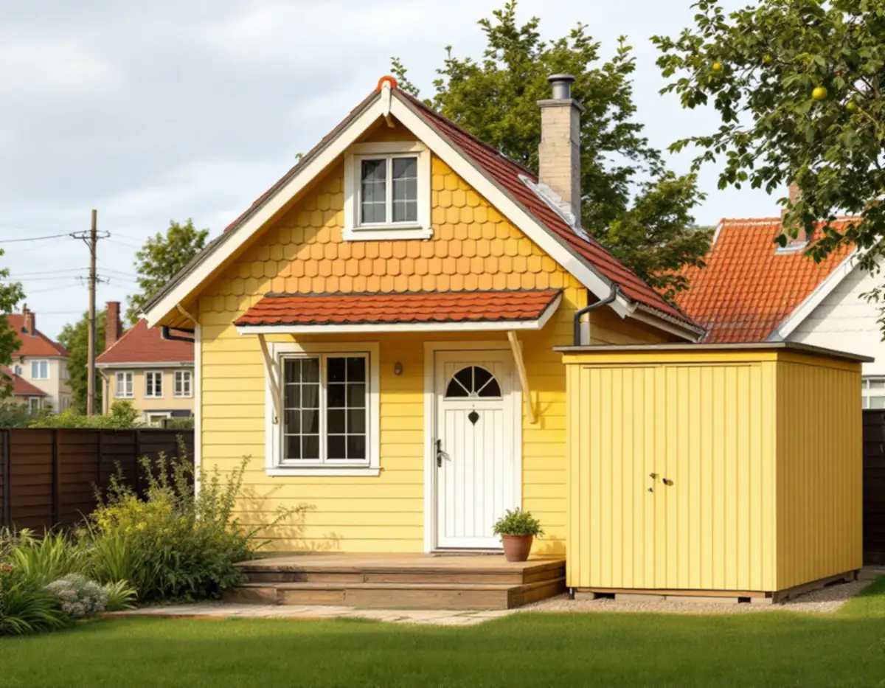
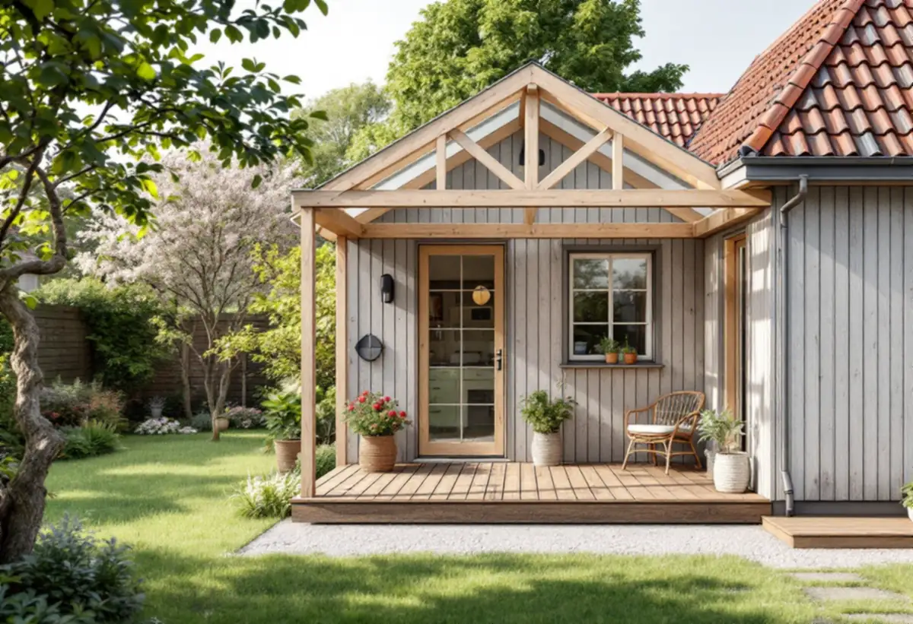

Platsbesök
Vi mäter tomten, avstånden till gränserna och de byggnader som redan finns.
Tallkrogen blev det största småstugeområdet i Söderort, och många av stugorna har byggts till genom åren. Var ett nytt förråd, en gäststuga eller ett skärmtak hamnar på tomten påverkar hela gatan. Geal Entreprenad AB bygger förråd, gäststugor, skärmtak och altaner i Farsta, Tallkrogen, Svedmyra och Sköndal, med gratis platsbesök och skriftligt kostnadsförslag.

Enligt Stadsmuseets text om Tallkrogen påbörjades utbyggnaden 1933, och under det närmaste decenniet växte närmare 1 000 småstugor upp på den flacka åkermarken. Vid en första anblick kan det se ut som samma stuga upprepad, men området rymmer mer än tio olika hustyper. Hustyperna var långt standardiserade, och byggnadsdelarna levererades färdiga från fabriken.
Småstugan lanserades i slutet av 1920-talet som ett sätt för mindre bemedlade att skaffa ett eget hem med trädgård. Kontantinsatsen ersattes med eget arbete, och staden lämnade fördelaktiga lån. Stadens områdesfakta räknar 945 bostäder i småhus i Tallkrogen 2025, och 941 av dem är äganderätter.
I stadens vägledning för småhus- och villaområden pekas Tallkrogen, delar av Svedmyra och delar av Sköndal ut som kulturhistoriskt värdefulla miljöer, och för Tallkrogen finns dessutom ett äldre miljöprogram. Även tunnelbanestaden Farsta har den markeringen. Därför börjar vi med kartan innan ett förråd ritas.

Vägledningen beskriver småstugeområdena som byggda på oftast plan mark med en utpräglat enhetlig bebyggelse. Hus av samma typ placerades gruppvis och med samma avstånd till gatan, och de smala gatorna fick förgårdsmark med häck eller fasad i gatulinjen. Vid förändringar är det enligt staden viktigt att inordna sig i områdets planstruktur.
När nya byggnader ska placeras, till exempel komplementbyggnader, råder vägledningen dig att utgå från gatumönstret i området och tänka på hur husen ligger i förhållande till tomtens topografi. För nya huvudbyggnader är det särskilt viktigt att följa husens konsekventa placering i gatuliv eller med förgårdsmark. Många stugor har byggts till, men förändringarna har huvudsakligen gjorts mot trädgårdssidan, och på så sätt har områdenas karaktär bevarats.
Det talar för att förrådet eller gäststugan står i den privata delen av trädgården och inte framför huset. Tillbyggnader mot gården bör enligt vägledningen också placeras så att siktvyerna från gatan in mot trädgården hålls öppna.
Stockholms stad räknar förråd, gäststuga, garage, bastu och det som tidigare kallades friggebod som komplementbyggnader. En sådan får byggas utan bygglov om den har högst 30,0 kvadratmeter byggnadsarea, är mindre än huset den kompletterar, har en taknock på högst 4,0 meter och står inom tomten. Alla lovfria komplementbyggnader och komplementbostadshus på tomten får tillsammans inte överstiga 45,0 kvadratmeter, och gamla friggebodar och attefallshus räknas in.
Byggnaden ska stå 4,5 meter från gränsen, annars krävs skriftligt medgivande från berörda grannar. För ett en- eller tvåbostadshus får den lovfria byggnaden strida mot detaljplanen, till exempel stå på prickmark. Installeras vatten och avlopp, ventilation eller en eldstad, som i en bastu, krävs anmälan och startbesked innan bygget börjar.
Lovbefrielsen gäller inte vid en byggnad eller i ett område som är särskilt kulturhistoriskt värdefullt. Ligger tomten inom grön eller blå ring i Stadsmuseets karta, eller är huset markerat med blått eller grönt, behöver du söka bygglov även för ett litet förråd.
Ett skärmtak eller ett uterum mot huset räknas som en tillbyggnad. Utan bygglov får tillbyggnaderna på huset vara högst 30,0 kvadratmeter sammanlagt och inte gå över husets taknock, och ett gammalt friggebodsskärmtak räknas in. En altan utan tak kräver bygglov först om den blir högre än 1,8 meter inom 3,6 meter från huset, eller högre än 1,2 meter längre bort.
Ett plank på altanen räknas in i höjden, men inte ett lovbefriat räcke. Får altanen tak eller väggar kan den bli en tillbyggnad. Mer om husets fasad och färg finns under målare i Farsta, och om altaner i allmänhet på sidan om snickare.
Vi mäter tomten, avstånden till gränserna och de byggnader som redan finns.
Stadsmuseets karta och detaljplanen visar om lovbefrielsen gäller.
Gamla friggebodar och skärmtak räknas in i 45 och 30 kvadratmeter.
Grund, stomme, panel, tak och dörrar redovisas var för sig.
Plintar eller platta, stomme och beklädnad enligt ritningen.
Du får mått och ritning att spara inför nästa bygge på tomten.
Skatteverket ger inget rotavdrag för att bygga en helt ny fristående byggnad, som en friggebod, ett garage eller ett växthus. En tillbyggnad av ett förråd, ett garage, en carport eller en gäststuga ger avdrag om någon av tillbyggnadens sidor sitter ihop med den befintliga byggnadens yttervägg till minst 75 procent, eller om det finns en dörr emellan.
En altan som byggs ihop med huset ger avdrag, liksom reparation av entrétrappor, altaner och räcken som sitter ihop med huset. Avdraget är 30 procent av arbetskostnaden, högst 50 000 kr per person och år och högst 75 000 kr tillsammans med rutavdrag. Material och resor ingår inte, och Geal drar avdraget direkt på fakturan.
Byggnadens storlek, grunden, taket och hur mycket isolering och inredning den ska ha väger tyngst. Platsbesöket är gratis och du får ett skriftligt kostnadsförslag.
Altan, väggar, dörrar och inredning.
Snickare i Stockholm →Takbyte, takbesiktning och plåtarbeten.
Takläggare i Farsta →Tallkrogens småstugor och villorna vid Magelungen.
Takrenovering i Farsta →Småstugor, kulturmiljö och gränser.
Attefallshus i Farsta →ABC-staden, radhus och asbest i våtrummet.
Badrumsrenovering i Farsta →En ny bostad i villan.
Byggföretag i Farsta →Tegel, puts, skivor och trädetaljer.
Fasadmålning i Farsta →Radhus, grupphus och fasadskivor.
Fasadrenovering i Farsta →Småstugor och radhus.
Fönsterbyte i Farsta →Småstugorna i Svedmyra och Sköndal.
Fönsterrenovering i Farsta →Linoleum, plastgolv och klinker i småstugan.
Golvläggare i Farsta →Slipa trägolvet och gå igenom resultatet.
Golvslipning i Farsta →ABC-staden, radhus och villor.
Köksrenovering i Farsta →Småstugor, ädelputs och radhus i Söderort.
Målare i Farsta →Skorstensbeslag och plåttak i Farsta.
Plåtslagare i Farsta →Radhusen, längan och föreningen.
Takbyte i Farsta →Tapet i 1960-talets lägenheter.
Tapetsering i Farsta →Småstugorna och trädgårdssidan.
Tillbyggnad i Farsta →Småstugorna och typritningarna.
Totalrenovering i Farsta →